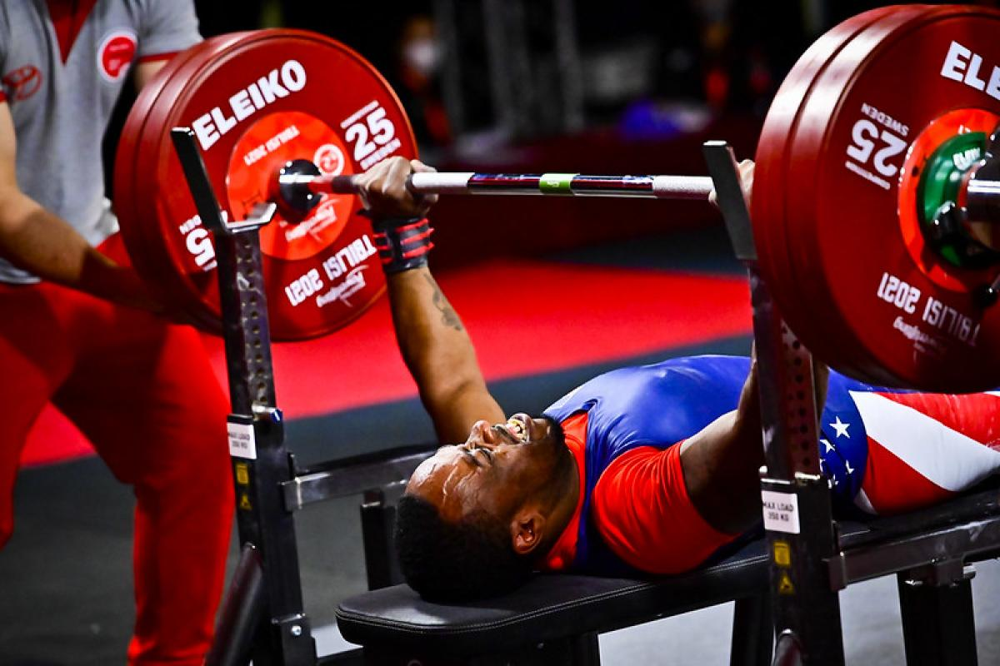
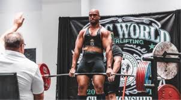
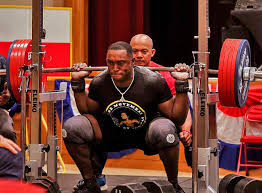
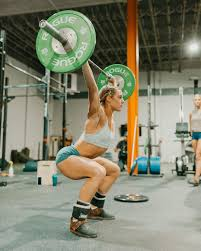
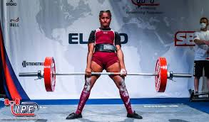
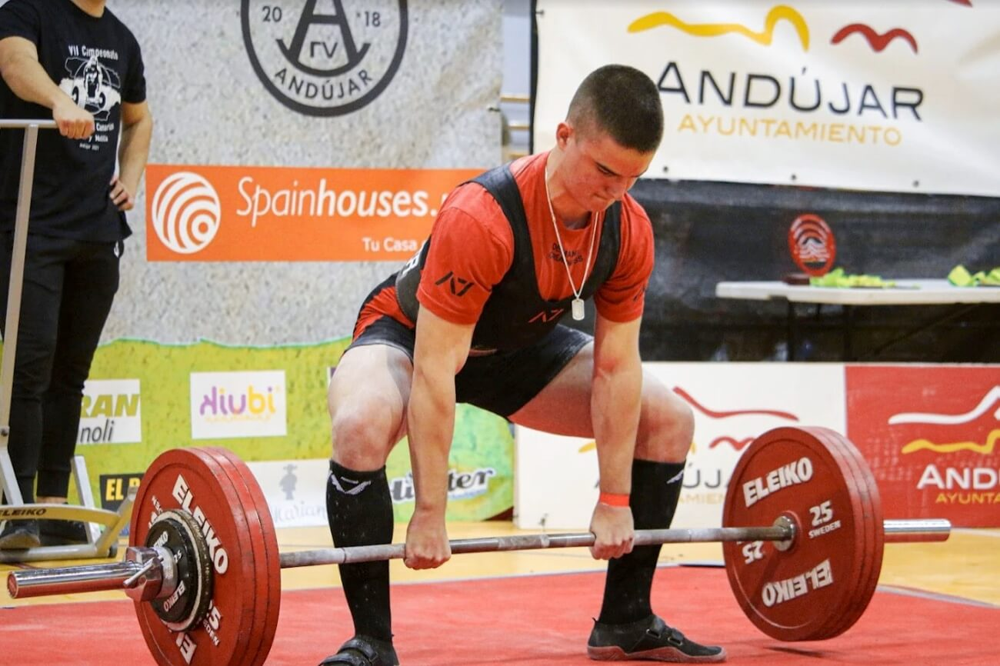

Galería de Fotos






Horarios del evento
- 9:00 AM - Sesión de Apertura
- 10:00 AM - Competición por Categorías
- 2:00 PM - Finales y Premiación
Actividades en la ciudad
Información del Evento
El evento de powerlifting 2025 se llevará a cabo en el Polideportivo Municipal de Santiago de Compostela, Galicia. Contaremos con la participación de atletas de diferentes categorías y una serie de actividades complementarias para los asistentes.
Fecha: 15 de marzo de 2025
Lugar: Polideportivo Municipal de Santiago de Compostela
Organizado por: Federación Gallega de Powerlifting
Contáctenos
Si tienes alguna pregunta o necesitas más información, no dudes en ponerte en contacto con nosotros: